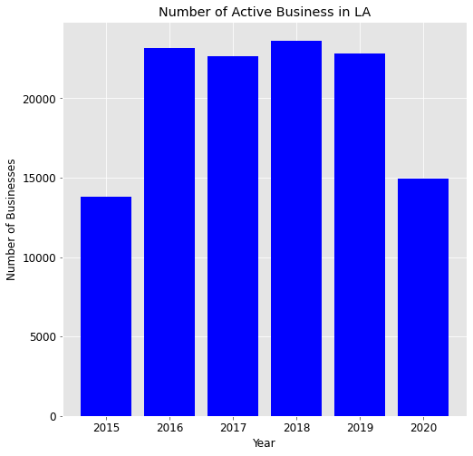
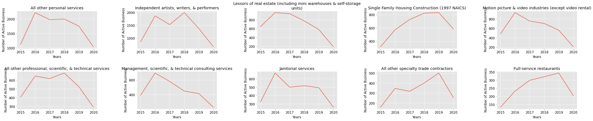

Impact of the Stay-At-Home Order on Business Growth in LA.
Background Info
{kind=link}
The project goals
The goal of this project is to evaluate the number of new active businesses that are tracked by the LA
Office for Finance, and determine if the onset of COVID-19 (Jan - July 2020) has an impact on business
growth, specifically:
- The absolute number of new active businesses by year
- The absolute number and percentage change of new active businesses by city between 2015-2020
- Determine if there is seasonality in new businesses in LA.
- The absolute number and percentage change of new active businesses by business classification between 2015-2020.
Resources & Citations
- 1. LA Office for Finance.
- 2. Access to Dataset used in this project.
- 3. County of Los Angeles Declares Local Health Emergency in Response to New Novel Coronavirus Activity.
- 4. COVID19.CA.GOV Stay home q&A.
- 5. Los Angeles Area Economic Summary .
- 6. Impact of COVID19 Mitigation on Traffic, Fuel Use and Climate.
- 7. Comparison between U.S. states and sovereign states by GDP.
- 8. Costa, Dora L. 2015. "Health and the Economy in the United States from 1750 to the Present." Journal of Economic Literature, 53 (3): 503-70.
Research Objectives
- Data extraction, transformation, loading, and exploring pipeline.
- Question 1: How have the Total Number of New Active Businesses Changed Between 2015 - 2020?
- Question 2: What is the total number of active business by city per year?
- Question 3: How have the number of new businesses change by city between 2015-2020?
- Question 4: What is are the number of new monthly businesses between Jan 2018 - July 2020?
- Question 5: Is there a difference in the number of new businesses by classification?
Abstract
Introduction
On March 4th, 2020, Los Angeles declared a local health emergency in response to the coronavirus spread
and 6 cases in LA county (3). On March 19, 2020, the Governor of California then directed
all residents to stay at home, effectively closing bars, public gatherings, events, conventions,
theme parks, festivals, in person higher education, indoor playgrounds, saunas, recreational team
sports, dine-in restaurants, wineries, movie theaters, family entertainment centers, zoos, and museums
(4). Since then, most of these businesses have been closed or severely restricted for four months, and
the impact of these extreme measures on the economy continues to be closely monitored by economist
and the government. The US Bureau of Labor Statistics published a July Report summarizing a sampling of
economic information for the Los Angeles region (4). They report that in May, California had a 15.9%
unemployment rate, while LA city specifically, had 20.8% of its residents unemployed, this is 2 in every
10 individuals. Moreover, a study published by UCD in April of 2020, reported that the stay-at-home
order costs California $46 million/week reduction in SB1 fuel tax funds and ~$161 million/week in total
fuel tax revenues for California state and local transportation projects (6). These estimates are only a
small sampling of a potentially larger issue, given the size of the California economy - which in 2019
would rank the fifth largest economy if it were
a sovereign nation (7). Therefore, it is important that policy makers conduct a thorough cost-analysis
on the short
and long term impacts that the stay-at-home policy could have on the economy, and include this data in
their decision making.
The goal of this post was to examine business growth before and after the stay-at-home
order, using data prepared by the City of Los Angeles. Growth is defined as new active businesses that
are registered with the City of Los Angeles in a given year, and did not notify the City of a cease in
business operation. I surmised that business growth declined after the stay-at-home order was decreed,
and that these numbers would be lower than the number of new businesses established during the same
period in 2018 and 2019. Important caveat, this post was published using data released
in July-15-2020 by the Office of Finance, and the dataset did not include information on businesses that
closed, moreover, the dataset only contains the instances until July 15 2020, therefore, it is possible
that the total number of new businesses may increase as the year progresses, and that the final number
of new businesses may coincide with the range of businesses reported in the previous years. To account
for this limitation, this study also compared the number of new businesses for each year between
2015-2020 for the months of Jan - end of June.
Major Findings:
- Between 2015-2019, the total annual number of new businesses ranged between 25,000 - 35,000.
- By July 2020, the total annual number of new businesses in LA was ~15,000s. When comparing just the number of new businesses between Jan to the end of june, the total for 2020 so far, was well bellow by ~ 5000 as compared to the previous 4 years.
- The drop in new businesses occurred in February, and not March, as hypothesized.
- Of the top 20 cities within LA that have the highest number of new businesses, all cities had a drop in new businesses for the period of Jan - end of June, as compared to the 2019 values.
- All of the top 10 business classifications in LA, had a drop in new business as compared to the previous year. Lessors of real estate had the largest drop in new active businesses (67% reduction) as compared to the 2019 values. The other hard hit business classifications include full-service restaurants, independent artists, writers, and performers, janitorial services, motion picture and video industries (except video rentals), and other professional, scientific, and technical services (to name a few).
- Some of the top 10 business classifications were already seeing a decline in annual new businesses prior to COVID, while two classifications were seeing an annual increase (single family housing construction, full-service restaurants, specialty trade contractors), although these numbers plunge well below half the 2019 values.
Conclusion:
The stay-at-home orders were imposed as a public health measure to control the spread of this novel Coronavirus, and reduce the number of deaths. To date, of the 39.51 million Californians, only 7889 individuals have been reported to have died due to Covid-19. Although every life lost is a tragedy, and we must continue to exercise caution when interacting with those most vulnerable, we must also consider ways to protect industry, especially since economists have argued that long term growing economies are associated with longer and healthier living (8). This project sought to understand how the stay-at-home order in LA may have impacted business growth. I specifically look at the number of new active businesses by cities, by business classifications. I also used two time period in this analysis 1) annual trends, and 2) the period between Jan to the end of June to gain greater insight into business growth trends on an annual basis, and during the period that the stay at home order was imposed. The findings from this study suggest that the stay-at-home order had reduced the absolute number, and percent of new business for the top 20 cities in LA, and for the top 10 business classifications. In fact, the number of new business started to drop in February, they plunge in March, when the order was put into effect. What long-term impacts this will have on city and state economy is yet to be determined, but it would be important to investigate the rate of business closures, and the debt burden these stay-at-home measures have and will continue to impose, as government officials use this to control the spread of Covid19.
Methods
Data
- The data for this project was obtained from data.lacity.org using the python module sodapy, to make the API call. The data is a listing of active businesses that are currently registered with the Office for Finace in the City of Los Angeles, CA USA. An active business is defined as a registered business that has not notified the Office of Finance that it will cease its business operations. This dataset is updated monthly and is available here: Data.lacity.org: Listing of Active Businesses
- Data Features: The Dataset consists of 16 features and 534,000 instances. In this post, the dataset was filtered for 9 features (business nane, address, city, zip code, location description, primary naics description, council district, location start date, and location). The data was also filtered for events after '2015-01-10T12:00:00'.
Analysis
The programming language Python was used in this project. The matplotlib library was used to visualize
the data, while the Pandas module was used to wrangle the data.
Results:
Data extraction, transformation, loading, and exploring pipeline. The standard Extraction, Transformation, Loading pipeline was used in this project.
- Import data into pandas using sodapy.
- Change Datatypes.
- Remove instances with missing data for location start date.
- Use matplotlib to visualize data.
Question 1: How have the total number of new active businesses changed Between 2015 -
2020?
To determine if the onset of Covid-19 in LA have had an impact on the
number of new businesses in LA, a bar plot of the total number of new businesses by year was charted.
As figure 1 and 2 illustrates, the total number of new active businesses in LA between 2016-2019 was over
35,000 new business, and this number then drops to ~15,000 between Jan- July 2020. When compared to previous years within the same time frame, the number in 2020 is well below 5000 new businesses. These findings suggest that the lower numbers we see in 2020 may not be a result
of seasonality (intra-annual variation in business growth), but rather a consequence of COVID19 on the LA economy.

Figure 1. Total number of annual new active business in LA between 2015 - 2020.

{kind=link}
Figure 2. Total number of new active business in LA between 2015 - 2020 for the months of Jan - July.
Question 2: What is the total number of active business by city per
year?
Los Angeles consists of a patchwork of many small cities, which in this dataset consists of 1672
areas! Looking at whether the onset of COVID in LA has affected each city would be a monumental
exercise, instead, I decided to focus only on the top 20 cities that have had the highest number of
new active businesses. This included:
'LOS ANGELES', 'VAN NUYS', 'NORTH HOLLYWOOD', 'SHERMAN OAKS', 'WOODLAND HILLS', 'ENCINO',
'NORTHRIDGE', 'STUDIO CITY', 'CANOGA PARK', 'RESEDA', 'TARZANA', 'VENICE', 'PANORAMA CITY', 'SYLMAR',
'SAN PEDRO', 'SUN VALLEY', 'GRANADA HILLS', 'CHATSWORTH', 'VALLEY VILLAGE', and 'PACOIMA'. Table 1
summarizes the total number of new businesses per city by year, between 2015-2020. The number of new
businesses for each city seems stable between 2016 - 2019, suggesting that the rate of new businesses
was stable, although this drops to nearly half for all cities in 2020.
Table 1. Total annual new businesses by city between 2015 -
2019.

Question 3: How have the number of new businesses change by city between
2015-2020?
Table 2 summarizes the same data described in Table 1, although it provides percent change from year
to year. Those in red are a negative change. Here we see that many of the cities in this subset had
already seen a drop in new businesses as compared to 2018 levels, so it is possible that the rate of
growth was already slowing down before the government imposed a stay at home order due to concerns over
COVID19 on public health.
To compare the change of growth for just the months between Jan to the end of June, the same analysis was conducted for just this time period for each year, and we see the same trends, all cities had seen a reduction in business growth, with Encino having the largest drop, and San Pedro having the smallest drop in the percent change, as compared to 2019.
Figure 2 and 3 helps to visualize these changes for both the annual new active businesses by city, and comparing the annual numbers for only the months between Jan - end of June. North Hollywood and Chatsworth are insteresting in that the rate of new businesses appear stable between 2016 - 2019, and then drop in 2020.
Table 2. The percent change in annual new businesses by city
between 2015 - 2019.
{kind=link}
Table 3. The percent change in annual new businesses by city
between 2015 - 2019 for the Months of Jan - July Only.


Figure 3. Change in annual new businesses by city and year.

Figure 4. Number of new active businesses by city and year for the period of Jan - July in each year.
Question 4: What is are the number of new monthly businesses between Jan 2018 - July
2020?
Thus far, annual data has been analyzed, although this analysis is good at evaluating any trends
between 2015-2019, it is not appropriate for 2020, since it only takes 7 months into account. To
determine if the number of new businesses for the first 7 months of 2020 trend with the first seven
months in 2018 and 2019, a fever plot was prepared. We see in Figure 4 that there is indeed
seasonality in new businesses, with november - january having a spike, and then dropping and
stabilizing between Jan - Oct, with a slight dip between Oct - Nov. If you compare the curves for
these first seven months between 2018, 2019, and 2020, we see that the curve is nearly half the values
in 2020 as it is in 2018 and 2019, suggesting that the onset of COVID19 in LA may have contributed to
the drop in business growth. In fact, the drop takes place in February of 2020, which is far lower
than the rate in the previous 2 years.

Figure 5. Number of total new active businesses by month between Jan 2018 - July 2020.
Question 5: Is there a difference in the number of new businesses by
classification?
In this dataset, there are 291 North American Industry Classification System codes (NAICS). These
codes were developed for use by the Federal Statistical Agencies for data related to the US Economy.
Using this system, I then wanted to determine if there were changes in the number of new businesses
for the top 10 most common NAICS descriptions. Table 4 summarizes these top 10, and well represent the
major industries in LA (entertainment, artists/performers, personal services, real estate lessors, and
full service restaurants, to name a few). Table 5 then summarizes the total annual number of new
businesses by NAICS for each year between 2015-2010, Table 6 provides the annual percent change
for the same time period, and Table 7 provides the percent change for each business classification taking only the months of Jan to the end of June into account.
We see that some of these business classifications were already seeing a drop in growth for nearly 4
consecutive years (management, motion picture, lessors of real estate), while some were growing each
year (full-service restaurants, and single family housing construction).
Figure 6 and 7 visualizes these changes for each NAICS. Figure 7 in particular confirms that when comparing the first half of each year, the numbers of 2020 is a drop over the 2019 levels. Suggesting that for some industries, the economy was already struggling, and the onset of the stay at home order further drove down any potential growth.
Table 4. Top 10 NAICS Descriptions in LA with the Highest
Number of New Active Businesses.

Table 5. The total number of annual new active businesses by
NAICS between 2015 - 2020.

Table 6. The annual percent change in new active businesses
by NAICS between 2015 - 2020.

Table 7. The annual percent change in new active businesses
by NAICS between 2015 - 2020 for the months of Jan - July only.
{kind=link}

Figure 6. Changes in total new annual business growth by NAICS in LA.

{kind=link}
Figure 7. Changes in total new annual business growth by NAICS in LA between Jan - July for each year in this study.